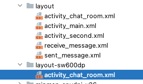
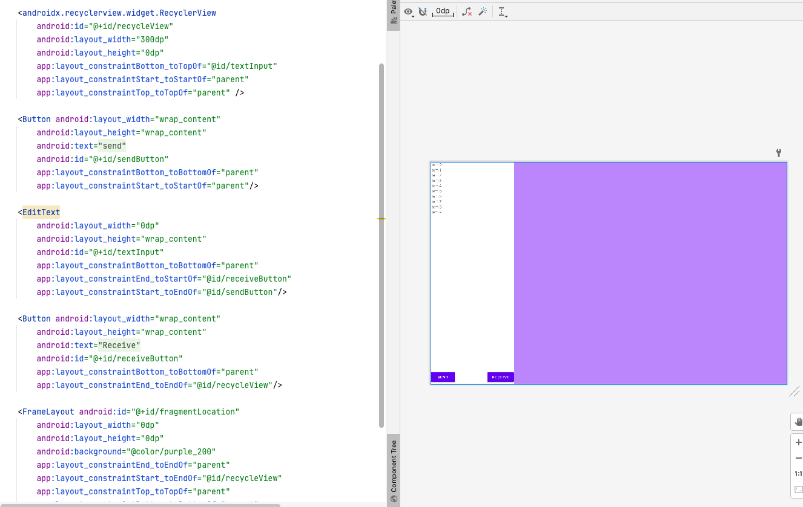
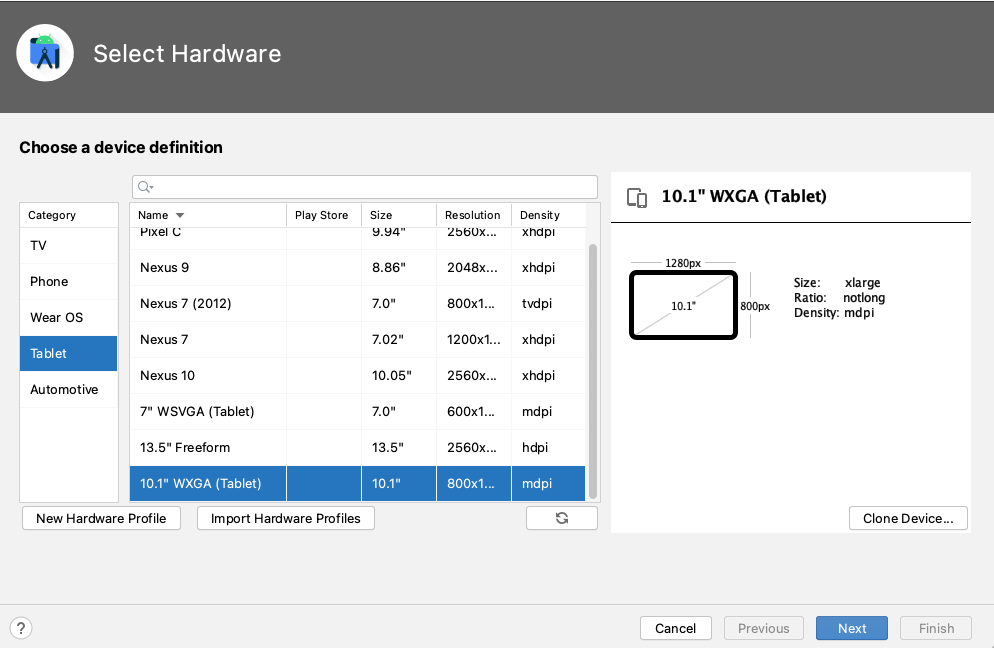
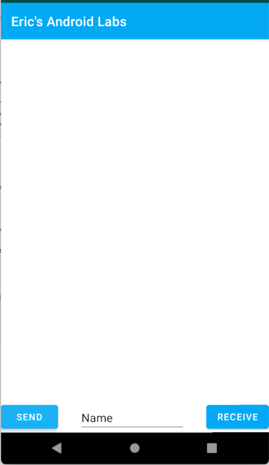
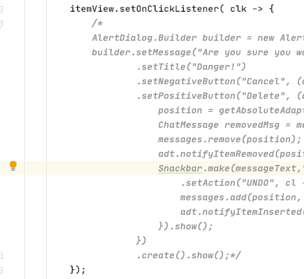

In this course, you have learned that if you put images in different Drawable folders followed by the two-letter language code, Android will look in that folder to load the file. The same thing happens for layout files.
Instead of using the device's language, you will use the device pixel size. Android uses the idea of a "Smallest Width", which is the smaller number of the width and height. There are two ways of holding a tablet, one is portrait mode, and the other is landscape mode.
For a display that is 800x600 pixels, the smallest width is 600 (the smaller number).
For a display that is 1024 x 768, the smallest width is 768 (the smaller number).
For a display that is 1920x1080, the smallest width is 1080.
There are some common folder names for different tablet sizes:
layout-sw600dp - this is for 7" tablets
layout-sw720dp - this is for 10" tablets
There are also two names for any size display:
layout-port - for any device in portrait orientation.
layout-land - for any device in landscape mode.
To create a layout for a tablet, create a new layout folder called layout-sw600dp, to support any tablets larger than 7". Copy your activity_chat_room.xml file and paste the file into the new folder that you created.

For a large tablet, you have enough space on the screen to show more than just a list of items. You have a list on the left, and room beside the list to show details about a selected item, like in the picture below:

In order to reserve room on screen for loading something else later, we will use a FrameLayout. A Framelayout is a layout that can only hold 1 item, so its job is really just to reserve space on the screen for what will be loaded later.
For the tablet version of activity_chat_room.xml in the layout-sw600dp folder, let's make the RecyclerView have width of 300dp instead of match_parent. Then place the FrameLayout next to the RecyclerView and buttons. I made the background colour of the FrameLayout purple just so that you can see the FrameLayout and where it is in the screen.

To see what it looks like on a Tablet, and you should create a 10" Tablet emulator:

You should use the same Android 27 x86_64 image that you downloaded for the phone that you've created. The ChatRoom.java loads the activity_chat_room.xml in both devices, however they are located in different folders.
On a phone, ChatRoom looks the same as before:

On a tablet, ChatRoom will load the other layout for a tablet (layout-sw600dp):
Now you should comment out the code you wrote for deleting a message from the RecyclerView.

Instead we will use the onClickListener to show details about the message on the side if it's a tablet, or we will load a new fragment if it's a phone. To do this, we'll add a variable to the ChatRoomViewModel class that before was storing the ChatMessages to survive rotation changes. In ChatRoomViewModel, create a variable of type MutableLiveData<ChatMessage> :
public class ChatRoomViewModel extends ViewModel {
public MutableLiveData<ArrayList<ChatMessage>> messages = new MutableLiveData< >();
public MutableLiveData<ChatMessage> selectedMessage = new MutableLiveData< >();
}
Now in the ChatRoomActivity class, where you used to have your AlertDialog about deleting the object, instead you should find the selected chat message and post that value to the selectedMessage variable you just created:
itemView.setOnClickListener( click -> {
int position = getAbsoluteAdapterPosition();
ChatMessage selected = messages.get(position);
chatModel.selectedMessage.postValue(selected);
});
Then in the onCreate() function, register as a listener to the MutableLiveData object:
chatModel.selectedMessage.observe(this, (newMessageValue) -> {
});
Now whenever the user clicks on a row, you can retrieve the ChatMessage object at that position, and post it to the ViewModel as the new value. Then, in the observe function, you can create a new Fragment object to show the details for that object.
Move on to the next module to learn how to display the ChatMessage using a Fragment object